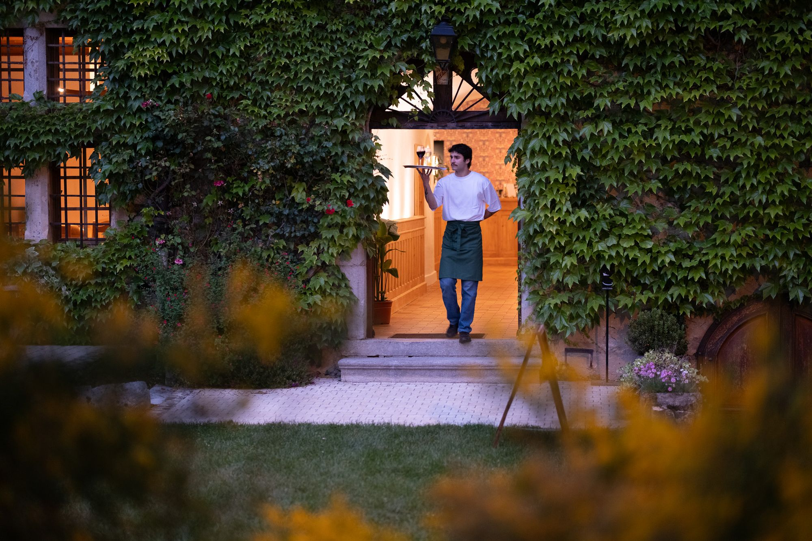

Le restaurant et la guinguette, face au lac.
Une carte courte et des produits locaux, par notre chef, en terrasse face à l’eau. Et pour un verre, la guinguette sous les arbres.
Réserver une table par téléphone
04 58 00 88 95

De la salle à la terrasse, un matin d’automne.
Menus à fournir
La carte
- Entréesà venirLa carte 2027 sera publiée ici au printemps.
- Platsà venirDes produits locaux, du Trièves et des vallées voisines.
- Dessertsà venir
- Panier pique-nique17 € / pers.Pour une journée sur l’eau ou en montagne.
Horaires
| Restaurant, soir | jeudi, vendredi et samedi, 18 h-22 h |
|---|---|
| Restaurant, midi | samedi et dimanche, 12 h-14 h |
| Guinguette | à préciser |
En juillet et août. Le restaurant est fermé du lundi au mercredi.
La guinguette
Un bar en plein air sous les arbres. On commande au bar, on choisit son coin, on reste le temps qu’on veut.
- Musique et jeuxEn libre accès, pour tous les âges.
- Au retour du lacTenue de sport et pieds nus bienvenus.
Les questions qu’on nous pose
Quand le restaurant est-il ouvert ?
En juillet et août : le soir du jeudi au samedi, de 18 h à 22 h ; le midi le samedi et le dimanche, de 12 h à 14 h.
Faut-il réserver ?
C’est préférable : appelez-nous au 04 58 00 88 95.
Peut-on venir sans dormir au château ?
Oui, le restaurant et la guinguette sont ouverts à tous en juillet et août.
Les chiens sont-ils acceptés ?
Oui, en terrasse.
Réserver une table
Par téléphone au 04 58 00 88 95. En juillet et août, le restaurant est ouvert du jeudi soir au dimanche midi.